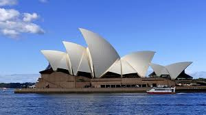
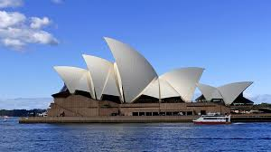

Angkor to największy kompleks sakralny świata - składa się na niego prawie100 świątyń rozrzuconych na 400 km kw.. Hinduistyczne i buddyjskie świątynie budowane były od IX do XV wieku w dżungli na terenach na obecnej północnej Kambodży, niedaleko Siem Reap. Angkor (słowo to po khmersku oznacza "stolicę" albo "święte miasto") był stolicą Imperium Khmerskiego przez ponad pół tysiąclecia (IX - XV w). Angkor Wat to najwspanialsza ze świątyń kompleksu. Jej budowę zakończono kilka lat przed wzniesieniem paryskiej katedry Notre Dame i podobno zużyto na nią więcej kamienia niż na Piramidę Cheopsa. Przez 37 lat (1113-1150 r.) pracowało przy niej 55 tysięcy robotników. Angkor Wat otacza kwadrat fosy i murów ma 2 km kw. Wybudowano ją dokładnie na skrzyżowaniu linii wyznaczających północ, południe, wschód i zachód ...
Machu Picchu to najsłynniejsze z zachowanych miast Inków. Położone jest tarasowo na zboczach gór wznoszących się powyżej 2000 m n.p.m. Wartość archeologiczna i historyczna oraz niesamowite widoki przyciągają co roku kilkaset tysięcy turystów. Uważane jest za jeden z cudów świata. Machu Picchu wpisane jest na listę UNESCO. ...
Tadź Mahal (Taj Mahal) to najsłynniejsza na świecie budowla zrodzona z miłości. Mauzoleum w Agrze wybudował z białego marmuru cesarz Szahdżahan, by unieśmiertelnić pamięć o ukochanej żonie Mumtaz Mahal. Prace rozpoczęto w 1632 r. i ukończono w 1648. Do mauzoleum prowadzi 30-metrowa brama wejściowa z czerwonego piaskowca. Centralna budowla Tadź Mahal, o ponad 30-metrowej fasadzie, stoi na podwójnej platformie - niższej z czerwonego piaskowca, wyższej z białego marmuru. Wieńczy ją 26-metrowa kopuła. W 4 rogach platformy wznoszą się 41-metrowe minarety, odchylone lekko na zewnątrz, by podczas trzęsienia ziemi nie uszkodziły mauzoleum. Fasady inkrustowane są agatami, kwiatami z marmuru i wersetami z Koranu, wyrzeźbionymi przez artystę perskiego Amanta Khana Shiraziego. Wnętrze Tadż Mahal ozdobione było szmaragdami, zrabowanymi przez Anglików. W niszy grobowej, pod kopułą, znajduje się sarkofag Mumtaz Mahal, a obok niego większy Szahdżahana, umieszczony w mauzoleum przez jego syna Aurangzeba. Sarkofagi oddzielone są balustradą, pierwotnie wykonaną ze złota, inkrustowaną szafirami i diamentami, zastąpioną przez Aurangzeba (który potrzebował pieniędzy na tłumienie rebelii w imperium Mogołów) marmurową, bogato zdobioną ażurem ...
Wielki Meczet Szejka Zayeda to najmłodszy obiekt w rankingu - skończono go w 2007 r. W zamyśle szejka Zayed, ojca Emiratów, pierwszego i wieloletniego prezydenta kraju, miał jednoczyć świat islamu. Biała świątynia nad brzegiem Zatoki Perskiej jest największym meczetem w Emiratach. Posiada 82 kopuły, cztery minarety o wys. 107 m, a jednocześnie modlić się tu może nawet 40 tysięcy wiernych. Łączy nowoczesne rozwiązania ze stylem mauretańskim i mogolskim ...
Sagrada Familia to symbol Barcelony i jedna z najbardziej rozpoznawalnych budowli na świecie. Świątynia Pokutna Świętej Rodziny to projekt życia Antonio Gaudiego. Budowę rozpoczęto w 1882 roku i wciąż trwa. Najwyższa wieża mierzyć ma 172 m, a obecnie sięga 115 m - po ukończeniu będzie to najwyższa świątynia świata. Fasady kościoła są bogato zdobione. Wschodnia przedstawia dzieciństwo Jezusa, zachodnia Mękę Pańską, południowa ukazuje życie Chrystusa po Zmartwychwstaniu, a wnętrze ma przypominać Jerozolimę. Sagrada Familia ze strzelistymi wieżami jest widoczna z niemal każdej części miasta, a najlepiej oglądać ją z wysoko położonego parku Guell ...
Bazylika św. Piotra to serce Watykanu i symbol papieskiej władzy. W VIII w. na rozkaz Konstantyna rozpoczęto prace nad wielką pięciopiętrową bazyliką z grobem św. Piotra pośrodku. Od tego czasu świątynia była rozbudowywana i upiększana. Została konsekrowana 18 listopada 1626 r. przez Urbana VIII. Na zewnątrz największe wrażenie wywiera rząd kolumn z 1656 r. - dzieło Berniniego. Pośrodku wznosi się obelisk o wysokości 25,5 m. Prawdopodobnie był poświęcony faraonowi Amenemhatowi II, a przywieziony do Rzymu przez Kaligulę w 37 r. n.e. Do środka bazyliki wchodzi się przez olbrzymi portyk z pięcioma drzwiami, których strzegą dwa posągi: Konstantyna Wielkiego i Karola Wielkiego. Porta Santa są otwierane tylko w Lata Jubileuszowe, przypadające raz na 250 lat. Główna nawa ma 187 m długości - dla porównania na posadzce zaznaczono długości kilku największych kościołów na świecie, w tym bazyliki Mariackiej w Gdańsku. Niedaleko wejścia, w pierwszej nawie po prawej stronie znajduje się najcenniejsza rzeźba stworzona przez młodego Michała Anioła - Pieta z 1498 r. ...
Katedra Narodzin Marii w Mediolanie, zwana popularnie Duomo, to gotycki kościół będący jednym z najbardziej rozpoznawalnych we Włoszech i na świecie. Dzięki swoim wymiarom (157x93 m) jest też jednym z największych na świecie. Olśniewa zarówno z zewnątrz dzięki pięknej fasadzie oraz dziesiątkom wieżyczek i pinakli, jak i wewnątrz, gdzie nie brakuje rzeźb, zdobień i witraży. Wspaniały jest widok z dachu na Mediolan i Alpy ...
Alcatraz to najsłynniejsze więzienie w Ameryce, przetrzymywano najgroźniejszych przestępców Ameryki, m.in. Ala Capone, George'a "Machine Gun" Kelly'ego, Arthura Barkera, Jamesa Josepha "Whitey'ego" Bulgera i Alvina Karpisa. Zanim zostało najlepiej strzeżonym więzieniem w USA, wyspa z fortem pełniła funkcje militarne. 11 sierpnia 1934 r. na wyspę przypłynął pierwszy transport 137 skazańców. W ciągu 29 lat funkcjonowania więzienia - popularnie nazywanego "The Rock" (Skała) - nie udało się zbiec ani jednemu więźniowi. Zanotowano 14 prób, w które zaangażowanych było 34 więźniów. Dwóch z nich udało się nawet wydostać z wyspy, jednak aresztowano ich wkrótce znów trafili do Alcatraz. Alcatraz zostało zamknięte 21 marca 1963 r. Dziś jest jedną z najpopularniejszych atrakcji turystycznych w okolicach San Fracisco. Codziennie ok. 5000 zwiedzających przypływa na wyspę promem. Nakręcono tu również dziesiątki filmów, m.in. "Ptasznik z Alcatraz", "Zbieg z Alcatraz" z Lee Marvinem, "Twierdza" z Seanem Connerym i Nicholasem Cage'em, "Morderstwo pierwszego stopnia" (1995) z rolami Kevina Bacona, Christiana Slatera i Gary'ego Oldmana, a także "Ucieczka z Alcatraz" z Clintem Eastwoodem ...
Nawet najwięksi polscy patrioci muszą przyznać, że to Chrystus w Rio de Janeiro, a nie w Świebodzinie jest najbardziej rozpoznawalną figurą Jezusa na świecie. Statua jest symbolem Rio i jednym z najpopularniejszych punktów widokowych. Pomnik Jezusa Chrystusa wznosi się na szczycie góry Corcovado (700 m), na którą można wjechać kolejką linową. Cristo Redentor ma 30 m wysokości i stoi na 8-metrowym cokole ...
Most Golden Gate (Złote Wrota) nad zatoką San Francisco to jeden z najpiękniejszych i najbardziej rozpoznawalnych mostów na świecie. Most o dł. 2,7 km jest ważnym węzłem komunikacyjnym łączącym San Francisco z hrabstwem Marin. Został otwarty 27 maja 1937. Golden Gate Bridge był często miejscem kulminacyjnych scen filmowych i akcji w literaturze, a także w grach komputerowych. Jest jedną z największych atrakcji turystycznych San Francisco. Należy do niego także niechlubny rekord samobójstw. Do tej pory z mostu skoczyło już ponad 2000 samobójców, z czego ponad 1500 zmarło ...
Przez ponad 4000 lat najwyższymi wzniesionymi przez człowieka budowlami były piramidy w Gizie. Dopiero w 1889 roku zdetronizowała je wieża Eiffla. Słynna francuska wieża mierzy 324 m i do dzisiaj nie ma konkurencji w całym Paryżu. Plany związane z budową wieży nie spotkały się z początku z akceptacją mieszkańców miasta. Wielu z nich obawiało się, że konstrukcja będzie przypominała wielką uliczną latarnię. Kontrowersje wokół wieży były tak duże, że grupa znanych paryskich artystów podpisała petycję, która miała na celu wstrzymanie budowy. Wniosek został odrzucony, a budowa ruszyła w 1887 roku. Do budowy wieży wykorzystano ponad 18 tys. elementów kutego żelaza oraz ponad 2,5 mln śrub ...
Sobór Zmartwychwstania Pańskiego w Sankt Petersburgu to jedna z najpiękniejszych świątyń w Rosji. Wzniesiono go na przełomie XIX i XX w. nad kanałem Gribojedowa na miejscu, w którym zamordowany został car Aleksander II - stąd jego druga nazwa Sobór (Cerkiew) na Krwi. Sobór ma 81 m wysokości i jest niezwykle bogato udekorowana - z zewnątrz i wewnątrz posiada wspaniałe zdobienia i złocenia, powierzchnia mozaik wynosi łącznie ok. 7 tys. mkw., a ikonostas inkrustowany jest szlachetnymi kamieniami ...
To jedna z najbardziej znanych katedr świata, a także niekwestionowana wizytówka Francji. Jej budowa trwała blisko 200 lat (między XII a XIV wiekiem). Stanowi niezwykłe osiągnięcie stylu gotyckiego w architekturze. Najbardziej charakterystyczne dla kościoła są witraże, szczególnie północna rozeta mieniąca się wieloma barwami, nadająca poblask w całej katedrze. "Nasza Pani" - bo tak można przetłumaczyć nazwę budowli - kryje w północnej wieży cztery odlane z brązu dzwony (najcięższy waży ponad 1900 kg). Znana jest z powieści "Dzwonnik z Notre Dame". Odwiedza ją ok. 14 mln turystów rocznie ...
Alhambra w Granadzie to najstarszy (XIII-XIV w.) i najlepiej zachowany pałac arabski na świecie, budowany przez władców dynastii Nasrydów jako ukoronowanie sztuki i ich potęgi. Pierścień murów tworzy prostokąt o długości ponad 700 m i szerokości ponad 200 m. W środku, choć dziś już w wydaniu dla turystów, można odnaleźć ucieleśnienie scenerii z 1001 nocy. Baśniowe zdobienia komnat, arabskie dziedzińce z szemrzącą w fontannie wodą albo ogrody w letniej rezydencji Generalife działają na wyobraźnię. W tle, za perłą Granady i Andaluzji, wznoszą się szczyty gór Sierra Nevada ...
Hagia Sophia (kościół Mądrości Bożej) jest jednym z symboli Stambułu. To świątynia ważna dla chrześcijan i muzułmanów. Jest też czwartym co do wielkości kościołem katedralnym na świecie. Nawa główna świątyni zwieńczona kopułą o średnicy 31 metrów robi imponujące wrażenie. Budowę Hagii Sophii, zainicjowaną jeszcze przez cesarza Konstantyna, ukończono w 360 roku, czyli w początkowym okresie przyjmowania chrześcijaństwa przez mieszkańców Cesarstwa Rzymskiego. Kościół dwukrotnie odbudowywano - w 415 r. i 532 r. - po tym jak był niszczony w zamieszkach. W 1453 roku, gdy Turcy podbili Konstantynopol, Hagia Sophia została przekształcona w meczet. W 1935 roku został on przekształcony w muzeum, zgodnie z zasadami nowej świeckiej polityki tureckiego państwa prowadzonej przez Kemala Mustafę Ataturka ...
Most Karola jest jedną z największych atrakcji stolicy Czech. Urzeczywistniający wizję króla Karola IV i zaprojektowany przez mistrza gotyku - Petra Parléřa urzeka pięknem i jest niemal na każdej widokówce z Pragi. Znajduje się na trasie prowadzącej z Hradczan i Małej Strany na Stare Miasto i Rynek. W okresie baroku most ozdobiono 30 posągami świętych, dziełami m.in. Matthiasa Bernarda Brauna i rodziny Brokoff. Na jednej z balustrad umieszczono tablicę pamiątkową poświęconą św. Janowi Nepomucenowi - 20 marca 1393 w tym miejscu według tradycji wrzucono go z rozkazu króla Wacława IV do Wełtawy. Dotknięcie płaskorzeźby, która znajduje się pod posągiem, przynosi szczęście. ...
Chiński Mur w roku 2007 ogłoszono jednym z siedmiu nowych cudów świata. Jego długość oceniano wtedy na 6300 km, w późniejszych latach skorygowano na blisko 9000 km, a niektórzy naukowcy dowodzą, że mógł ciągnąć się przez nawet 22 tys. km. Początki Wielkiego Muru powstały w Okresie Walczących Królestw (około VII wieku p.n.e.). Częściowo składał się z umocnień ziemnych, a w dużej części z barier naturalnych, jak góry i woda. Miał on za zadanie chronić państwo przed najazdami hord stepowych z terenów Mongolii. W III wieku p.n.e. pierwszy cesarz Chin zarządził budowę muru, przy którego budowie zginęło około miliona ludzi. W późniejszym okresie, za czasów kolejnych dynastii cesarskich, mur był nadal konserwowany, ale jego znaczenie militarne poważnie zmniejszyło się; służył bardziej jako baza wypadowa na tereny leżące poza granicami Chin, niż pełnił funkcję obronną. Wielki Mur Chiński wpisano na listę UNESCO ...
Mauzoleum (Memoriał) Abrahama Lincolna w Waszyngtonie to pomnik upamiętniający 16. prezydenta Ameryki. Został zbudowany z białego marmuru na wzór klasycznej greckiej świątyni. Otoczony jest 38 kolumnami doryckimi. We wnętrzu znajduje się posąg Abrahama Lincolna ...
Burdż Chalifa (Burj Khalifa) to najwyższy budynek na świecie. Oddano go do użytku 4 stycznia 2010 roku. Liczy 828 metrów wysokości. Konstruktorzy musieli sprostać wielu wyzwaniom technologicznym, jakie niesie budowa tak wysokiego obiektu, od kwestii wytrzymałości konstrukcji i wpływu wiatru począwszy, na windach (najdłuższe i najszybsze) i instalacji wodno-kanalizacyjnej skończywszy. Budynek kosztował około 1,5 miliarda dolarów, ma 160 pięter użytkowych. Na 76. piętrze można popływać w basenie, a na 124. podziwiać panoramę Dubaju z tarasu widokowego - obydwie atrakcje również położone najwyżej na świecie. Pierwsze 9 pięter wieży zajmuje luksusowy Armani Hotel, a na kolejnych 7 można było nabyć apartamenty zaprojektowane również przez słynnego Armaniego, za jedyne 37,5 tys. dolarów/m2. Powierzchnie biurowe są nieco droższe - 43 tys. dolarów/m2. Szacuje się, że w budynku może mieszkać i pracować ok. 25-35 tysięcy osób ...
Muzeum upamiętniające ataki z 11 września zostało otwarte w Nowym Jorku 21 maja 2014 r. Mieści się w podziemiach poniżej miejsca, gdzie stały wieżowce World Trade Center. Ekspozycja zawiera 10 tys. artefaktów, 23 tys. zdjęć oraz 500 godzin wideo i filmów. Są tam fotografie osób zabitych w atakach, a także ich osobiste rzeczy odszukane w zgliszczach, np. buty, wizytówki czy karty kredytowe. Jest nawet odnaleziony na pobliskiej ulicy list pisany przez jednego z zakładników w porwanym samolocie, który uderzył w World Trade Center. W muzeum znalazły się poruszające materiały filmowe sprzed 13 lat, przedstawiające płonące wieżowce i wyskakujących z nich ludzi. Wideo Matta Lauera odtwarza minuta po minucie to, co się stało rankiem 11 września 2001 roku. Zachowały się też fragmenty podziemnych murów, resztki schodów, dzięki którym sporo ludzi się uratowało, część fasady i inne elementy konstrukcyjne. Do rzucających się w oczy przedmiotów należy ok. 11-metrowa stalowa belka, która jako ostatnia została wyciągnięta spod gruzów. Belka, zwana Last Column, podczas procesu odbudowy przyciągała pracowników, przechodniów i członków ekip ratunkowych, którzy pokryli ją pamiątkowymi inskrypcjami, ogłoszeniami i fotografiami. W muzeum znalazły się też części kadłuba samolotu American Airlines, którego terroryści użyli do zamachu. Pokazano też częściowo wypalone lub zmiażdżone pojazdy strażackie oraz rowery ...
Wat Pho to najstarsza (XVI w.) świątynia w Bangkoku. Słynie z potężnego posągu Odpoczywającego Buddy. Pozłacana figura, mierząca 15 m wysokości i 46 m długości, ukazuje Oświeconego w momencie osiągania nirwany. Stopy posągu mają po 3 metry wysokości i są pięknie udekorowane masą perłową. Na terenie watu (kompleksu świątyń) zgromadzono też tysiące innych rzeźb przedstawiających Buddę. Oprócz tego, w świątyni Leżącego Buddy znajduje się uznana szkoła tajskiego masażu ...
Chichén Itzá to najlepiej zachowany kompleks budowli Majów na meksykańskim Jukatanie. Najbardziej spektakularnym zabytkiem w Chichén Itzá jest piramida poświęcona Kukulcánowi - bożkowi Inków. Hiszpanie nazwali ją El Castillo (Zamek). Piramida kryje tajemnicę opracowanej przez Majów metody pomiaru czasu. Liczba stopni i tarasów odpowiada liczbie dni i miesięcy w roku, a pięćdziesiąt dwa reliefy po każdej stronie piramidy symbolizują 52-letni cykl kosmiczny. Można zobaczyć też Świątynię Wojowników (Tempo de los Guerros), na szczycie której, pomiędzy dwoma kamiennymi wężami jest posąg, na którego kolanach znajdowało się naczynie na serca wycinane na żywo z ciał ofiar. Bardzo interesującym obiektem jest dobrze zachowany stadion piłkarski (Juego de Pelota). Reguły gry nie zostały wyjaśnione do końca. Wiadomo tylko, że zawodnicy musieli odbijać piłkę biodrami lub ramionami, aby trafiała ona do kamiennych kręgów ...
Opera w Sydney to architektoniczna wizytówka największego miasta Australii. Dzieło duńskiego architekta Joerna Utzona przypomina kształtem muszle lub rozpięte żagle. Otwarcie opery nastąpiło 20 października 1973 roku w obecności królowej Elżbiety II. W 2007 roku budynek trafił na listę światowego dziedzictwa UNESCO ...
Wieże Petronas (Petronas Twin Towers) wznoszą się na wysokość 452 metrów, mają 88 pięter i są symbolem stolicy Malezji - Kuala Lumpur. Do dziś znajdują się w czołówce najwyższych budynków świata. Wieże łączy mostek, na który mogą wchodzić turyści, ale naiwny, komu wydaje się, że bez problemu pokona gigantyczną kolejkę do wejścia. Punkt widokowy na wieżach to równocześnie jedno z najbardziej obleganych miejsc na świecie. Wieżowce są siedzibą licznych instytucji kulturalnych, m.in. filharmonii. Zagrały ponadto w dziesiątkach filmów ...
80-kilometrowy kanał to jedna z najważniejszych dróg wodnych na świecie i jedno z największych osiągnięć inżynieryjnych w historii. Łączy Ocean Atlantycki z Pacyficznym, skracając wydatnie czas i trasę podróży oraz czyniąc ją bezpieczniejszą. Rocznie pokonuje go ok. 14 tys. statków. Po francuskim niepowodzeniu przy budowie kanału w latach 80. XIX wieku (13 lat prac okupiono śmiercią ok. 22 tys. osób), projekt podjęli Amerykanie, nabywając na mocy porozumienia z Panamą - tuż po jej oderwaniu od Kolumbii - prawa do budowy i administracji strefą oraz pozostawioną przez Francuzów infrastrukturę. Budowa kanału zajęła kolejnych 10 lat, śmierć poniosło dalsze kilka tysięcy osób, a całkowity koszt konstrukcji szacuje się na ok. 375 mln dolarów. Kanał obchodził w 2014 r. 100. rocznicę powstania - trwa gigantyczna inwestycja zmierzająca do jego poszerzenia ...
Göbekli Tepe (z tur. wybrzuszone wzgórze; kurd. Girê Navokê, Girê Miradan) – stanowisko archeologiczne w południowo-wschodniej Turcji, w bezpośrednim sąsiedztwie wioski kurdyjskiej Xirabreşk, w odległości ok. 15 km od miasta Şanlıurfa, kryjące pozostałości prehistorycznego sanktuarium. Odkrycie to, razem z Nevalı Çori, doprowadziło do rewizji wiedzy o neolicie w Eurazji. Göbekli Tepe jest najstarszym znanym miejscem kultu stworzonym przez człowieka (jego powstanie datowane jest na 10 tys. lat p.n.e.)[1]. ...
Zespół klasztorny bernardynów w Leżajsku – zespół zabytków położony przy pl. Mariackim 8 w Leżajsku, którego początki sięgają I poł. XVII w. Wybudowany dla sprowadzonych staraniem biskupa przemyskiego Macieja Pstrokońskiego w 1608 roku bernardynów. W jego skład wchodzą: kościół pw. Zwiastowania NPM (wedle tradycji zlokalizowany w miejscu ukazania się Matki Boskiej z Józefem), klasztor, cmentarz kościelny (dziedziniec odpustowy), mury obronne z basztami i bramami, folwark klasztorny (otoczenie zespołu). W kościele znajdują się niezwykle cenne organy. ...
Zamek w Łańcucie, in. zamek Lubomirskich i Potockich w Łańcucie – dawna rezydencja magnacka znajdująca się w Łańcucie, w województwie podkarpackim. ...